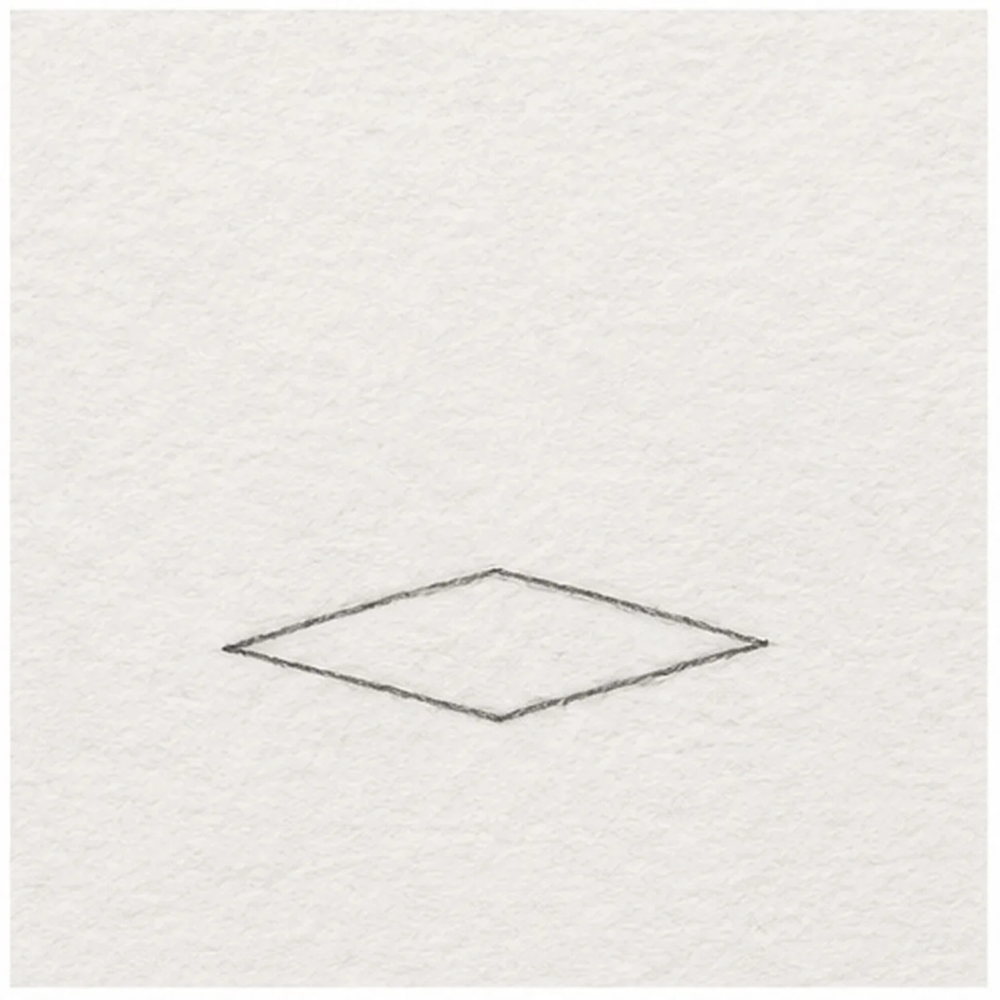
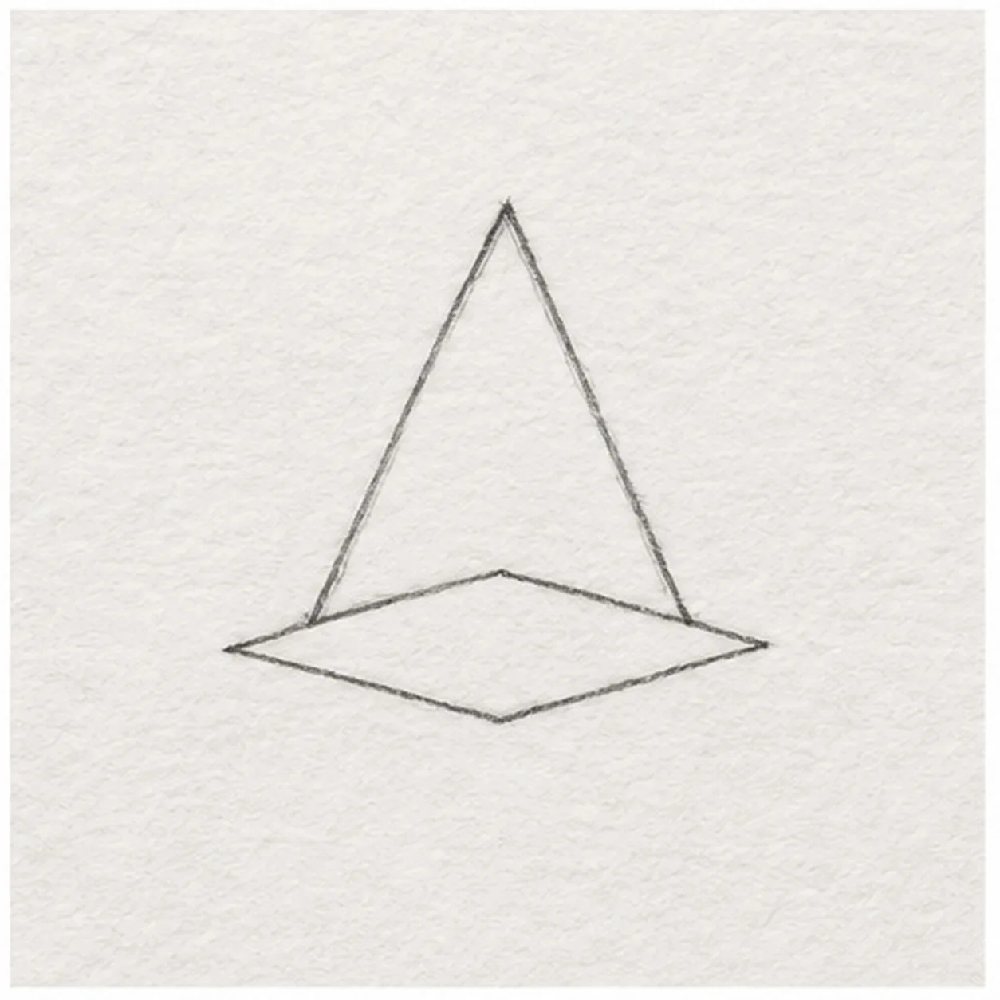
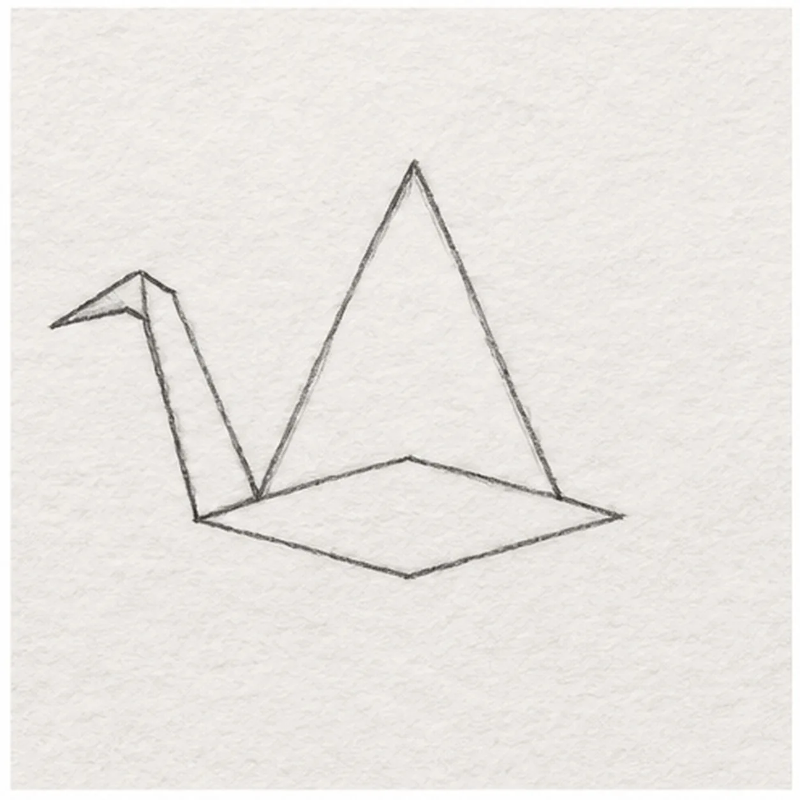
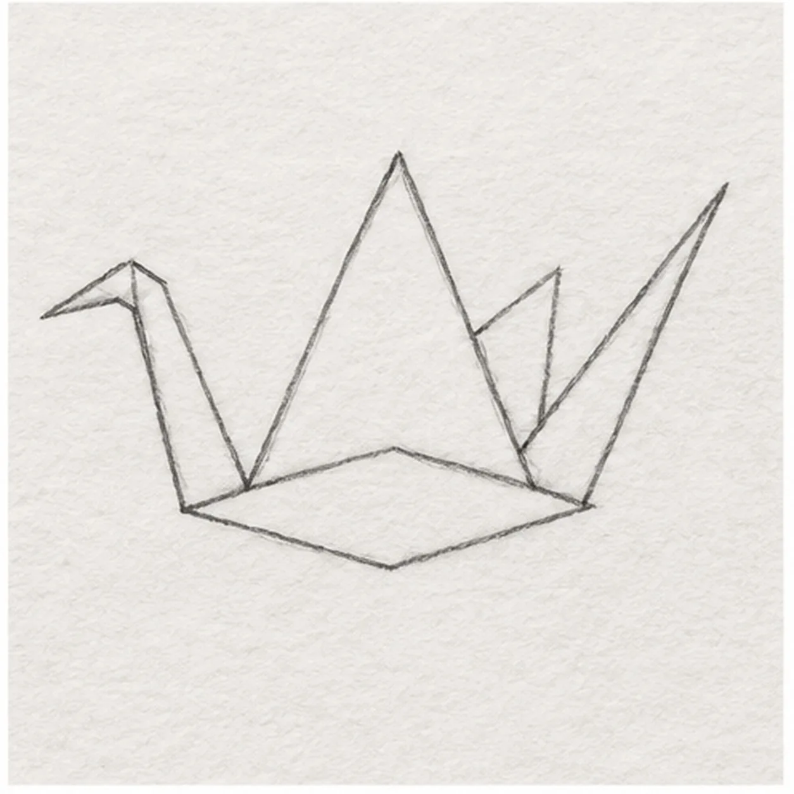
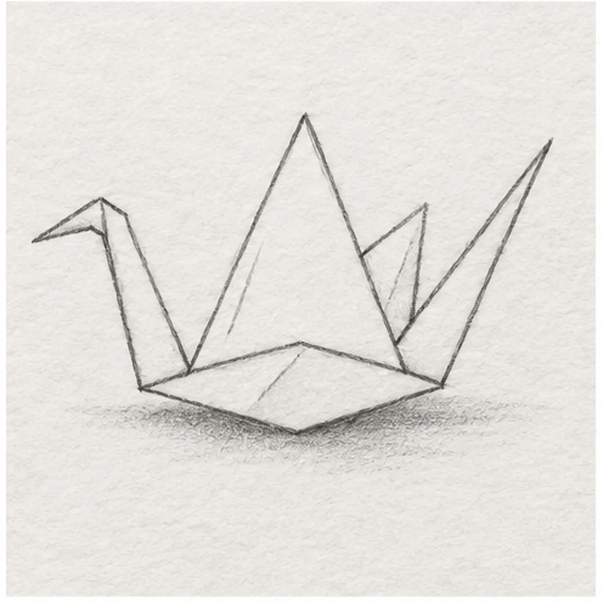

From the archive
Let's draw a paper crane
Treat this as one small practice round: build the subject lightly, notice the shapes, then darken only the lines that help the finished sketch.
-
01

Place the folded body
Draw a small horizontal diamond just below page center, with its left and right points level. Leave open paper above for the wings.
Sketch tip: Keep the body wider than it is tall; its pointed ends locate the neck and tail.
-
02

Raise the near wing
From the body's upper left shoulder, lift a long diagonal to a high point. Bring its other edge down to the upper right shoulder to make a single triangular wing.
Sketch tip: The wing tip is the highest point. Attach both lower corners to the existing top edge.
-
03

Fold the neck and beak
Raise one neck edge from the left body point and the other from the near wing's left root. Bend their tips forward into a small head and sharp left-pointing beak.
Sketch tip: Let the neck rise beside the wing without moving its base or crossing the body.
-
04

Add tail and far wing
Extend a narrow pointed tail from the body's right tip. Behind the near wing, lift a shorter triangular far wing from the upper right shoulder, keeping its root hidden by the near wing.
Sketch tip: Keep the far wing shorter so the two wings are easy to tell apart.
-
05

Mark folds and shadow
Add three short crease strokes inside the established body and wings. Shade a soft broken shadow directly beneath the body, touching its lowest point.
Sketch tip: Creases follow the paper planes; soften the shadow more than the outlines.
-
06

Shade the paper crane
Layer pale blue-gray pencil on the established wings and body, deepen the existing creases with graphite, and soften the same ground shadow. Leave one broad white paper face on the near wing.
Sketch tip: Leave the large near wing mostly white so its folded face stays crisp.